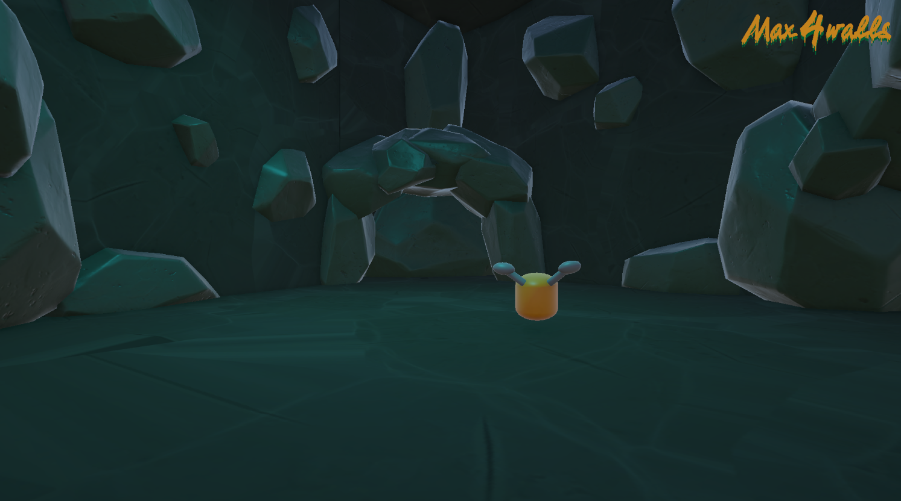
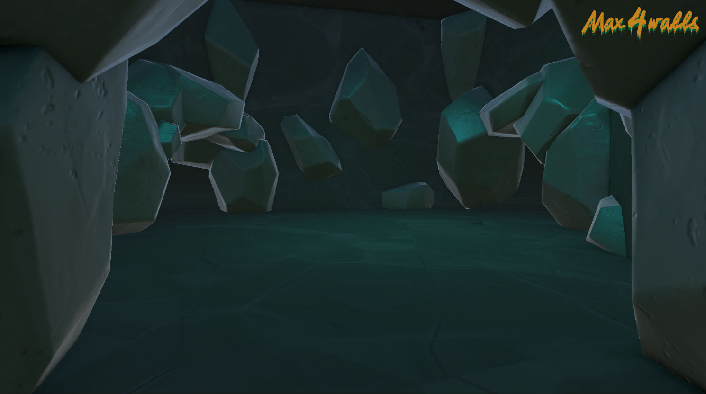
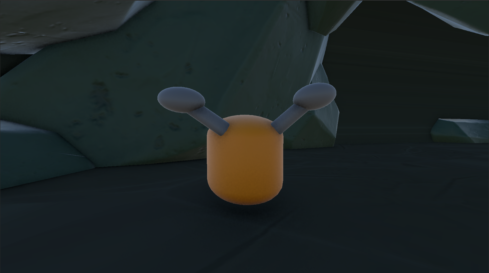
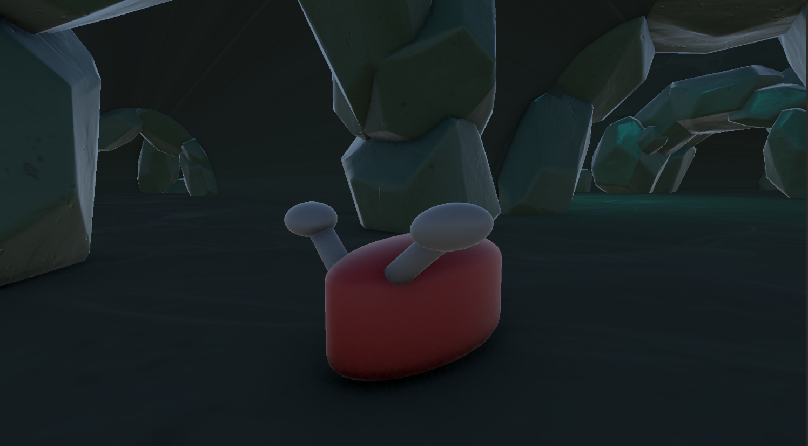
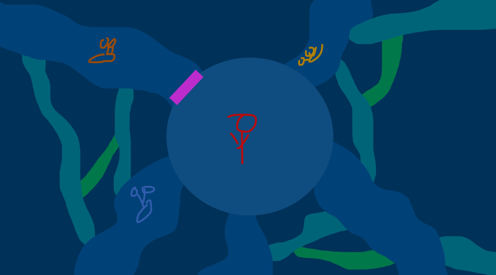
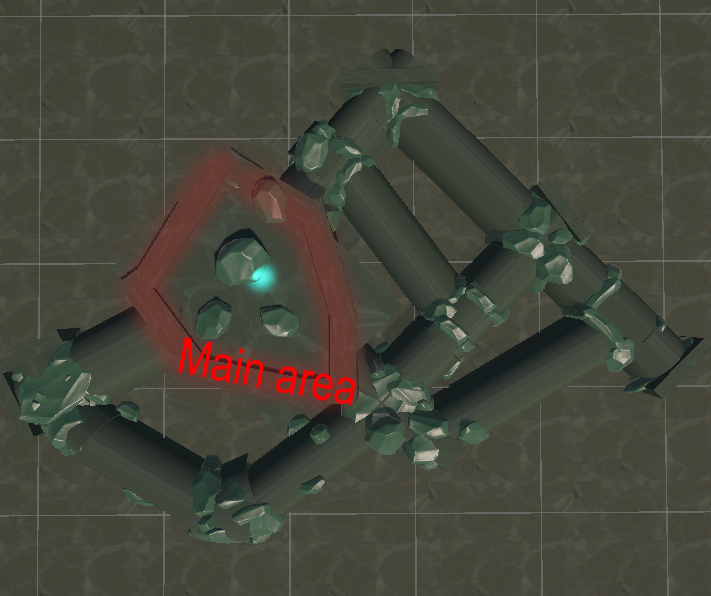

Theme
Singleplayer • 3D • First-Person • Strategy • Platformer • Chaos
Game
In Slime tactics, your goal is to separate yourself from the immortal yellow snail by using death as your advantage in a small cave.
When you collide with a red snail, you "die" and respawn in the main area. Your body that's been left behind transforms into a wall. Using this mechanic strategically, you have to block the three tunnels leading into the main area.
To win, you must be in the main area with all three entrances blocked off without the yellow immortal snail inside, because if you collide with the immortail snail, it's game over!


Core design Choices
-
Snails
The snails spawn in a random location on the map, ensuring that every playthrough is unique. There are two kinds of snails, each with distinct behaviors:
-
Yellow immortal snail
Never stops following the player wherever, creating constant pressure.
-
Red snail
Remains passive until the player enters its detection radius. The player must lure red snails into specific positions to use them strategicaly.


-
-
Player respawn
Having the player respawn back into the main area whenever they collide with a red snail creates chaos, unpredictability and excitement. They constantly have to re-orient themselves and find their way through the cave again. Players also need to plan their actions carefully to avoid potentially respawning when the yellow snail is in the center, as it poses a serious threat.
-
Four walls
The player has only four walls, this constraint forces them to think strategically on how to block off the main area from the immortal snail.
-
3D and first-person view
A 3D, first-person perspective is the best fit for this kind of game. It immerses the player and it helps create the feeling of being trapped with an immortal snail. This builds tension and can turn into excitement and adrenaline.
-
Level design
After I came up with the core idea, I designed a simple map in photoshop to support the gameplay mechanics. Since the game's design relies heavily on the level layout to make the game fun, this was an important step.
I designed the map with interconnected tunnels to increase frequent snail encounters and to give players a wider range of strategic options.

After that, I went to unity for implementation. Eventually, after some playtesting and iteration, the final map turned out like this:

Challenges
During early brainstorming to improve the core concept, I ended up with two different versions of the game:
-
Whenever the player collides with a red snail, the player "dies", respawns at the main area, and their left behind body transforms into a wall.
-
Red snails gets transformed into a wall whenever the player collides with them. The player does not get respawned at the main area.
I prototyped and playtested both versions with a variety of playtesters. After collecting feedback, I evaluated each version based on these three points, which helped me decide which version to continue with:
-
How fun was it to play?
-
How long does the experience remain engaging for the player?
-
How scalable is the idea to turn into a full game?
Software and tools
- Miro for brainstorming and documentation.
- Unity as the engine.
- Blender to create the visual assets (The rocks were re-used from a previous assignment).